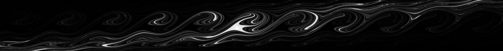

Shortly after starting grad school at Cornell, I ran across a book on fractals and chaos and decided that I would write a program to compute the Mandelbrot set. I wrote a few different versions in Matlab, which I used to generate the plots below (using GIMP to add color). I later wrote an interactive version in Java, to make it easier to change the view of the fractal.
You can click on each image to make it bigger, or right-click to download at full resolution.

Another neat fractal is the driven-damped pendulum. This one is neat because it corresponds to a physical system: a swinging pendulum (with some damping) that is connected to a motor (generating a time-periodic torque). Given any initial state, the pendulum will eventually reach some basin of attraction and stay there. In other words, when the pendulum starts, it can flip over the top, but eventually it loses so much energy that it can only sway back and forth. The neat thing is that two initial states that start nearby do not necessarily (or even usually) end up in the same potential well. One might flip over the top three times, while the state right next to it will flip nine times. This plot shows the set of all initial states the converge to the same potential well.
You can click on each image to open it in a new tab at full resolution.
